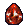
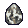
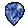
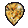
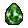
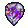

Na hitro
- Poberi vse rune, geme, jewele, charme, prstane, amulete, circlete, unique in set predmete ter razredne predmete za svoj razred (claws, orbi, wandi, necro glave, pelti, barb helmi, žezla, paladin ščiti, amazon loki in kopja). Bele predmete s socketi poberi, če so baza za runeword. Podrobneje v splošnem vodiču.
- Razredni predmet s +skilli je zgodaj pogosto najboljše orožje: magic claw z »+2 to Lightning Sentry (Assassin Only)« in »+1 to Traps« je za trapsina boljši od vsakega belega orožja. Kateri razredni predmeti obstajajo, je spodaj po razredih.
- Preživetje: Ruby v helm in oklep (life), Diamond ali Ral, Tal, Ort, Thul v ščit (resi), Vitality v state, merc z aurom (Act 2 Defiance ali Act 1 Vigor po JuxtAPoserju). V Nightmare in Hell resi padejo, zato jih zbiraj sproti.
- Škoda: pri melee, lokih, metanju in Blade skillih jo dela orožje; pri spellih in pasteh skill (+skills, FCR); pri summonih minioni (+skills). Več v razdelku Škoda.
- Točke: načrt skill in stat točk po levelih je pri vsakem buildu (»Načrt od 1 do 99«), tam je tudi blok »Za začetnike«.
Kaj socketaš
Gem ali runa da drugačen stat glede na to, kam ga vstaviš. Za preživetje: life v helm in oklep, resi v ščit, leech v orožje (melee). Vstavljeno lahko kasneje odstraniš le z Hel runo in Town Portal scrollom v cubu (gem ali runa se uniči).
Helm in oklep
Ruby (+10 do +38 life) za vse. Io (+10 Vitality) od levela 35. Shael da 20 % FHR, Sol zmanjša vsak udarec za 7. Topaz za Magic Find, ko že preživiš.
Ščit
Diamond (+6 do +19 vseh resov) ali ena od Ral, Tal, Ort, Thul (35 % enega resa, zgodaj najboljše za eno runo), kasneje Um (+22 vseh). Skull vrača škodo napadalcu.
Orožje
Melee: Skull (life in mana leech) ali Amn (7 % life leech), Shael (20 % IAS). Caster orožje s socketi raje uporabi za runeword (Spirit, Leaf, Neophyte).
| Gem (chipped → perfect) | Helm in oklep | Ščit | Orožje |
|---|---|---|---|
 Ruby | +10 / 17 / 24 / 31 / 38 life | Fire Resist +12 / 16 / 22 / 28 / 40 % | 3-4 … 15-20 fire škode |
 Diamond | +20 … +100 attack rating | All Resistances +6 / 8 / 11 / 14 / 19 | +28 … +68 % škode proti undead |
| Skull | replenish life +2 … +5, mana regen 8 … 19 % | napadalec dobi 4 … 20 škode (thorns) | 2 … 4 % life in 1 … 3 % mana leech |
 Sapphire | +10 … +38 mane | Cold Resist +12 … 40 % | 1-3 … 10-14 cold škode |
 Topaz | 9 … 24 % Magic Find | Lightning Resist +12 … 40 % | 1-8 … 1-40 lightning škode |
 Emerald | +3 … +10 Dexterity | Poison Resist +12 … 40 % | strup 10 … 100 škode |
 Amethyst | +3 … +10 Strength | +8 … +30 defense | +40 … +150 attack rating |
Vrednosti so od chipped do perfect (perfect po Hiim katalogu). Tri enake geme v cubu združiš v gem višje kakovosti.
| Runa | Helm in oklep | Ščit | Orožje | Opomba |
|---|---|---|---|---|
 Ral Ral | Fire Resist +30 % | Fire Resist +35 % | 5-30 fire škode | ščit: 35 % resa za eno runo, najboljše zgodaj |
 Tal Tal | Poison Resist +30 % | Poison Resist +35 % | 75 strupa v 5 s | |
 Ort Ort | Lightning Resist +30 % | Lightning Resist +35 % | 1-50 lightning škode | |
 Thul Thul | Cold Resist +30 % | Cold Resist +35 % | 3-14 cold škode | |
 Amn Amn | napadalec dobi 20 škode | napadalec dobi 24 škode | 7 % life leech | orožje: leech za melee |
 Sol Sol | Physical Damage Taken Reduced by 7 | … by 9 | +9 min škode | zmanjša vsak udarec |
 Shael Shael | 20 % FHR | 20 % FBR | 20 % IAS | oklep: hitrejše okrevanje po udarcu |
 Dol Dol | replenish life +20 | replenish life +30 | +20 % ED | |
 Io Io | +10 Vitality | — | +10 Vitality | oklep ali helm: +life za vse |
 Um Um | All Resistances +15 | All Resistances +22 | open wounds | kasneje, ščit |
Kako dobiš sockete
- Larzuk (Act 5, Siege on Harrogath): bel predmet dobi največ socketov, kolikor jih baza dovoli; magic 1–2; rare, set in unique 1.
- Cube: magic orožje + 3 chipped gemi = magic orožje istega tipa z 1–2 socketoma (nov roll, ilvl 25). Dober način za socketan claw ali orb.
- Socket recepti za bele predmete (runa + runa + perfect gem) so v crafting vodiču.
Imbue in reroll
- Charsi imbue (Act 1): bel predmet brez socketov postane rare z ilvl = tvoj level + 4. Razredni predmeti (claw, orb, wand …) imajo pri imbue veliko večjo možnost za +skilli, ki raste z levelom do 94.
- Magic predmet + 3 perfect gemi v cubu: nov roll istega predmeta. Dobro za grand charm z +1 na drevo.
Zgodnji runewordi
Runewordi, ki jih JuxtAPoser navaja v S14 opremi za leveling in zgodnji farming. Rune vstaviš v bel predmet z natanko pravim številom socketov, v tem vrstnem redu. Premakni miško na ime za vse statse.
| Runeword | Lvl | Rune | Baza | Glavni statsi (PD2) | Razredi (JuxtAPoser) |
|---|---|---|---|---|---|
| Stealth | 17 | Tal  Eth Eth | Armor | +10% Faster Run/Walk; +20% Faster Cast Rate; +20% Faster Hit Recovery; +6 to Dexterity | Necromancer, Sorceress |
| Leaf | 19 |  Tir Ral Tir Ral | Staff | +3 to Fire Skills; Adds 5-30 Fire Damage; +[1-2] to Inferno (Sorceress Only); +3 to Warmth (Sorceress Only) | Sorceress |
| Ancient's Pledge | 21 | Ral Ort Tal | Any Shield | +50% Enhanced Defense; Cold Resist +43%; Lightning Resist +48%; Fire Resist +48% | Amazon, Druid, Necromancer |
| Neophyte | 23 | Thul Tir | Scepter / Club / Sorceress Item / Hand to Hand / Hand to Hand 2 / Staff | +30% Faster Cast Rate (Non-Staves Only); +40% Faster Cast Rate (Staves Only); Adds 3-14 Cold Damage; Physical Damage Taken Reduced by [2-4] | Paladin |
| Spirit | 25 | Tal Thul Ort Amn | Sword / Any Shield / Staff | +1 to All Skills; +[25-35]% Faster Cast Rate; +25% Faster Hit Recovery; +[11-22] to Vitality | Amazon, Paladin |
| Edge | 25 | Tir Tal Amn | Missile Weapon | Level 15 Thorns Aura when Equipped; +35% Increased Attack Speed; +[320-380]% Damage to Demons; +280% Damage to Undead | Assassin, Necromancer |
| Lore | 27 | Ort Sol | Helm | +1 to All Skills; +[5-10] to Energy; Lightning Resist +30%; Physical Damage Taken Reduced by 7 | Amazon, Assassin, Druid, Necromancer, Paladin, Sorceress |
| Insight | 27 | Ral Tir Tal Sol | Polearm / Staff / Spear | Level [12-17] Meditation Aura when Equipped; +35% Faster Cast Rate; +[180-240]% Enhanced Damage; +9 to Minimum Damage | Assassin, Barbarian, Sorceress |
| Peace | 29 | Shael Thul Amn | Armor | You May Summon 1 Additional Valkyrie; 8% Chance to Cast Level 12 Slow Movement when Struck; +1 to Amazon Skills; +20% Faster Hit Recovery | Amazon |
| Smoke | 37 |  Nef Nef  Lum Lum | Armor | +20% Faster Hit Recovery; +75% Enhanced Defense; +280 Defense vs. Missile; +10 to Energy | Assassin, Druid, Necromancer, Sorceress |
| Memory | 37 | Lum Io Sol Eth | Staff | +4 to All Skills; +33% Faster Cast Rate; +9 to Minimum Damage; -25% Target Defense | Druid |
| Harmony | 39 | Tir  Ith Sol Ith Sol  Ko Ko | Missile Weapon | Level 10 Vigor Aura when Equipped; +[200-275]% Enhanced Damage; +9 to Minimum Damage; +9 to Maximum Damage | Amazon |
| Hustle | 39 | Shael Ko  Eld Eld | Armor | Level 6 Burst of Speed When Equipped; +20% Increased Attack Speed; +20% Faster Hit Recovery; +10 to Dexterity | Amazon |
| Melody | 39 | Shael Ko Nef | Missile Weapon | +3 to Bow and Crossbow Skills (Amazon Only); +20% Increased Attack Speed; +[100-150]% Enhanced Damage; +300% Damage to Undead | Amazon |
| Unbending Will | 41 |  Fal Io Ith Eld Fal Io Ith Eld  El El  Hel Hel | Sword | 8% Chance to Cast Level 18 Taunt on Striking; +3 to Combat Skills (Barbarian Only); +[20-30]% Increased Attack Speed; +[300-350]% Enhanced Damage | Barbarian |
| Loyalty | 45 |  Pul Tir Dol Pul Tir Dol | Spear / Missile Weapon | +2 to Passive and Magic Skills (Amazon Only); +60% Faster Cast Rate; +[200-245]% Enhanced Damage; +75% Damage to Demons | Amazon |
| Crescent Moon | 47 | Shael Um Tir | Axe / Sword / Hand to Hand / Thrown Weapon / Throwing Axe / Scepter / Polearm / Spear | 10% Chance to Cast Level 27 Lightning on Striking; 12% Chance to Cast Level 13 Static Field on Striking (Axes/Swords/Scepters/Claws/Throwing Weapons Only); 24% Chance to Cast Level 13 Static Field on Striking (Polearms/Spears Only); +20% Increased Attack Speed | Amazon |
Vsi runewordi z iskanjem po runah, ki jih imaš: Runewordi.
Zgodnji magic in rari
Magic predmet ima največ dva affixa (pogosto boljša vrednost kot rare), rare jih ima do šest. Pri vsakem preveri, ali ima kaj od tega:
| Orožje | Caster: razredno orožje s +skilli (orb »+3 to Meteor«, wand »+3 to Teeth«, claw »+3 to Lightning Sentry«) in FCR ali runeword Spirit ali Leaf. Melee, lok in metalno orožje: največji razpon škode in % Enhanced Damage, IAS, life leech; zgodaj Steel, Malice, Strength ali Edge. |
|---|---|
| Ščit ali druga roka | Resi (Ancients' Pledge, Rhyme, Diamond ali Ral, Tal, Ort, Thul v socketih), pri melee tudi block. Caster: orb, necro glava ali paladin ščit s +skilli. |
| Helm | Lore (+1 vsi skilli), circlet ali razredni helm s +skilli, life; socket napolni z Ruby. |
| Oklep | Stealth, kasneje Smoke (resi za Hell); life in resi; socket z Ruby ali Io. |
| Rokavice | Melee in lok: 20 % IAS. +drevo (pri amazonki, assassinu, druidu in barbu so nekatera drevesa tudi na rokavicah), resi, life. |
| Pas | Life, resi, FHR, več vrstic za potione. |
| Škornji | Faster Run/Walk, resi, life. FRW zgodaj prihrani največ časa. |
| Amulet | +1 ali +2 class skills, FCR, resi, life. |
| Prstana | Vsi: resi, life, mana. Caster: FCR. Melee: attack rating, life leech, min in max škoda. |
| Charmi | Small charmi z life, resi ali FHR; grand charm s +1 na tvoje drevo (od levela 42). |
Po vrsti builda
- caster: FCR (rokavice 20, pas 10–20, amulet in prstana po 10), +skilli (amulet ali circlet s +1/+2), resi, dva vira half freeze za CBF, life in mana po killu, FRW na škornjih.
- melee: IAS (rokavice 20), ED in min/max škoda, life in mana leech, attack rating, crushing blow in deadly strike (rokavice, helm), resi in FHR.
- lok: IAS, +bow skills (magic rokavice z +3 in 20 IAS), pierce, Dexterity, attack rating, life leech in resi; crafted quiver.
- metalno orožje: IAS, +throwing ali javelin skills, crushing blow, deadly strike, max škoda, life leech in resi.
- summoner: +summon skills (amulet, helm, ščit ali glava), FCR, resi, life in FHR; minioni dobijo bonus od vseh +skillov.
- pasti: +trap skills, FCR (pasti postavljaš kot spelle), resi, FRW ter life in mana po killu.
Kaj imajo na rarih in katere korupcije iščejo najboljši S13 igralci za posamezen build, je v »Načrt od 1 do 99« pri buildu.
Kje gledaš škodo
orožje
Melee, lok, metanje, Blade Sentinel, Blade Fury, Vengeance, pri amazonki tudi Magic, Fire in Cold Arrow (del škode orožja). Odpri character screen (C): pri skillu na levem in desnem kliku je izpisana škoda. Orožja primerjaš tako, da ju zamenjaš in pogledaš številko. Na orožju šteje razpon škode (One-Hand, Two-Hand ali Throw Damage), % Enhanced Damage, +min/+max in IAS.
skill
Spelli in pasti (Meteor, Blizzard, Lightning Sentry, Holy Bolt, Blessed Hammer, Teeth …). Škodo vidiš v skill drevesu (T): premakni miško na skill. Dvigujejo jo +skills, sinergije (samo vložene točke) in kasneje −% enemy resistance. Orožje šteje le zaradi +skills in FCR.
minioni
Summoni (golemi, skeleti, volkovi, Valkyrie, Decoy). Moč dvigujejo +skills in aure; tvoje orožje nanje ne vpliva. Statse miniona vidiš v tooltipu skilla.
brca in mešano
Dragon Talon in Dragon Tail: škoda je iz kick damage na škornjih ter Strength in Dexterity. Charge-up skilli (Phoenix Strike, Claws of Thunder, Fists of Fire), Poison Strike, Rabies in Cobra Strike: glavnina je iz skilla, orožje šteje za hitrost in zadetek.
Delež škode orožja pri skillih je s PD2 wikija (npr. Blade Sentinel 100 %, Blade Fury 75 %, Magic Arrow 75 %). Kateri build je katere vrste, je spodaj po razredih.
Questi, ki jih ne preskočiš
| Act 1 · Den of Evil | 1 skill točka in brezplačen respec pri Akari (enkrat na težavnost). |
|---|---|
| Act 1 · Tools of the Trade | Charsi imbue: bel predmet postane rare. Lahko počaka: na višjem levelu je večja možnost za +3 na skille. |
| Act 2 · Radament's Lair | Book of Skill: 1 skill točka. |
| Act 3 · The Golden Bird | Potion of Life: +20 life za vedno. |
| Act 3 · Lam Esen's Tome | 5 stat točk. |
| Act 4 · The Fallen Angel (Izual) | 2 skill točki. |
| Act 4 · Hell's Forge | Naključna runa. |
| Act 5 · Siege on Harrogath | Larzuk doda sockete: bel predmet dobi največ, kar baza dovoli, magic 1–2, rare, set ali unique 1. |
| Act 5 · Prison of Ice (Anya) | Scroll of Resistance: +10 vse resi za vedno. |
Razredni predmeti, škoda in JuxtAPoser
Za vsak razred: na katerih predmetih so +skilli (»staffmodi« na posameznih skillih, +drevo, +class skills) in od katerega levela, kje vsak naš build dela škodo ter JuxtAPoserjevi S14 leveling buildi, zgodnji farming in cenejši mapperji z opremo in mercem.
JuxtAPoserjeva S14 tier lista s pd2guides.pages.dev (stanje 2026-10-23). Ocene S do D; buildi so večinoma testirani na beti, brez korupcij. Affixi in levelske zahteve so iz Hiim kataloga.
Amazon
Kaj pobirati
Amazon nima predmetov s +skilli na posamezne skille; njena orožja (amazon loki, kopja, javelini) imajo vedno +1 do +3 na drevo.
- +X to Bow and Crossbow Skills (Amazon Only): +1 od levela 15: loki in samostreli, rokavice, circleti, tulci, amuleti, amazon kopja, amazon javelini, amazon loki (in grand charmi); +2 od levela 30: loki in samostreli, rokavice, circleti, tulci, amuleti, amazon kopja, amazon javelini, amazon loki; +3 od levela 45: loki in samostreli, rokavice, circleti, tulci, amuleti, amazon kopja, amazon javelini, amazon loki
- +X to Passive and Magic Skills (Amazon Only): +1 od levela 15: rokavice, amuleti, circleti, tulci, amazon kopja, amazon javelini, amazon loki (in grand charmi); +2 od levela 30: rokavice, amuleti, circleti, tulci, amazon kopja, amazon javelini, amazon loki; +3 od levela 45: rokavice, amuleti, circleti, tulci, amazon kopja, amazon javelini, amazon loki
- +X to Javelin and Spear Skills (Amazon Only): +1 od levela 15: kopja, rokavice, amuleti, circleti, amazon kopja, amazon javelini, amazon loki (in grand charmi); +2 od levela 30: kopja, rokavice, amuleti, circleti, amazon kopja, amazon javelini, amazon loki; +3 od levela 45: kopja, amazon kopja, amazon javelini, circleti, rokavice, amuleti, amazon loki
+X to Amazon Skill Levels: +1 od levela 22: loki in samostreli, amuleti, circleti, kopja, oklepi, ščiti, helmi; +2 od levela 30: loki in samostreli, amuleti, circleti, kopja, helmi, oklepi, ščiti
Kje gledaš škodo (naši buildi)
- Lightning Fury: orožje (100 % škode orožja)
- Fire Arrow: orožje (50 % škode orožja)
- Multiple Shot: orožje
- Strafe (Demon Machine): orožje
- Plague Javelin: orožje
- Cold Arrow: orožje (50 % škode orožja)
- Explosive Arrow: orožje
- Summon Zon: minioni
- Split Throw: orožje
- Lightning Strike: orožje
- Jab/Fend: orožje
- Pure Summon (Decoy & Valk): minioni
- Magic Arrow: orožje (75 % škode orožja)
JuxtAPoser S14
Leveling
Pot skozi kampanjo in oprema za leveling.
- Magic Arrow -> DecoyZon Nm & Hell B+ Leveling · hitrost B, varnost A · oprema: Lore, Harmony, Loyalty, Spirit, Ancients' Pledge · merc: A4 Dark · video: Amazon Leveling s13, Full Walkthrough Zon
Zgodnji farming
Farmanje takoj po kampanji.
- Lightning Strike S Zgodnji farming · hitrost A, varnost A, vsestranskost C · kje: Arcane, Cows · oprema: Crescent moon, Hustle · merc: A2 Def, A1 Vigor · pri nas: Lightning Strike
- DecoyZon A+ Zgodnji farming · hitrost A, varnost A, vsestranskost A · kje: Keys, AB, Chaos · oprema: Peace, Lore, Loyalty · merc: A4 Dark · video: DecoyZon Early Farming · pri nas: Pure Summon (Decoy & Valk)
- Magic Arrow B Zgodnji farming · hitrost B, varnost A, vsestranskost A · kje: Chaos, CZ · oprema: Melody, Hustle · merc: A1 Vigor, A2 Def · pri nas: Magic Arrow
Cenen mapper
En večji runeword in nekaj ključnih uniquov, brez endgame BIS opreme in GG korupcij.
- SummonZon + strafe B+ Cenen mapper · hitrost B, varnost A · oprema: Ebonbane, Skillers · merc: A5 Might, A1 Vigor · video: SummonZon · pri nas: Summon Zon
- Jab/fend C Cenen mapper · hitrost C, varnost B · oprema: Stone Raven, Jewels · merc: A1 Vigor, A5 Might · video: Jabazon · pri nas: Jab/Fend
- Light Strike A Cenen mapper · hitrost B, varnost B · oprema: Infinity, Thunderstroke, Skillers · merc: A1 Vigor, A2 Defiance · video: Light Strike · pri nas: Lightning Strike
- Magic Arrow A Cenen mapper · hitrost A, varnost A · oprema: Enigma, Melody, Magic LC's · merc: A1 Vigor, A2 Defiance · video: Budget Magic Arrow · pri nas: Magic Arrow
- Multishot S Cenen mapper · hitrost A, varnost A · oprema: A good crafted/rare bow · merc: A1 Vigor, A5 Might · pri nas: Multiple Shot
- MS Bleed S Cenen mapper · hitrost S, varnost A · oprema: Gut siphon, Bleed gear · merc: A1 Vigor, A5 Might · video: MS Bleed · pri nas: Multiple Shot
- SplitZon A Cenen mapper · hitrost A, varnost B · oprema: Jealousy RW, Phys damage gear · merc: A1 Vigor, A5 Might · video: Split zon · pri nas: Split Throw
Assassin
Kaj pobirati
+1 do +3 na posamezen skill (npr. »+3 to Lightning Sentry (Assassin Only)«): bodala, kremplji (claws)
- +X to Traps (Assassin Only): +1 od levela 15: kremplji (claws), amuleti, circleti, bodala (in grand charmi); +2 od levela 30: kremplji (claws), amuleti, circleti, bodala; +3 od levela 45: kremplji (claws), amuleti, circleti, bodala
- +X to Shadow Disciplines (Assassin Only): +1 od levela 15: kremplji (claws), amuleti, helmi, circleti, bodala (in grand charmi); +2 od levela 30: kremplji (claws), amuleti, helmi, circleti, bodala; +3 od levela 45: kremplji (claws), amuleti, helmi, circleti, bodala
- +X to Martial Arts (Assassin Only): +1 od levela 15: kremplji (claws), amuleti, rokavice, circleti, bodala (in grand charmi); +2 od levela 30: kremplji (claws), amuleti, rokavice, circleti, bodala; +3 od levela 45: kremplji (claws), amuleti, rokavice, circleti, bodala
+X to Assassin Skill Levels: +1 od levela 22: amuleti, circleti, kremplji (claws), bodala, oklepi, ščiti, helmi; +2 od levela 42: amuleti, circleti, kremplji (claws), bodala, helmi, oklepi, ščiti
Kje gledaš škodo (naši buildi)
- Wake of Fire: skill
- Blade Sentinel (Venom): orožje (100 % škode orožja)
- Blades of Ice: orožje
- Chain Lightning Sentry: skill
- Cobra Sin: skill + orožje
- Phoenix Strike: skill + orožje
- Dragon Tail (Fire Kick): brca (škornji)
- Blade Fury: orožje (75 % škode orožja)
- Mind Blast: skill
- Poison Blade Dance: orožje
- Claws of Thunder: skill + orožje
- Death Sentry: skill
- Fists of Fire: skill + orožje
- Blade Sentinel (Phys): orožje (100 % škode orožja)
- Physical Blade Dance: orožje
- Mind Blast: skill
JuxtAPoser S14
Leveling
Pot skozi kampanjo in oprema za leveling.
- Blade sentinel for Normal > Light traps for NM & Hell S Leveling · hitrost S, varnost A · oprema: Insight, Lore, +Light Sentry Claw · merc: A2 Def · video: Leveling Sin S13, Sin Zero To Hero, Sin zero -> Hero walkthrough
- Psychic Hammer -> MindBlast (no respecs) B+ Leveling · hitrost B, varnost S · oprema: Insight, Lore, +MBlast Claws · merc: A2 Def, A4 Dark · video: Leveling Sin S13, Sin Zero To Hero, Sin zero -> Hero walkthrough
- Blade Sentinel + Venom all the way A Leveling · hitrost A, varnost A · oprema: Edge, Smoke · merc: A1 Vigor · video: Leveling Sin S13, Sin Zero To Hero, Sin zero -> Hero walkthrough
- Light Traps all the way A Leveling · hitrost A, varnost A · oprema: Insight, Lore, +Light Sentry Claw · merc: A2 Def, A1 Vigor · video: Leveling Sin S13, Sin Zero To Hero, Sin zero -> Hero walkthrough
Zgodnji farming
Farmanje takoj po kampanji.
- Wake Of Fire B Zgodnji farming · hitrost B, varnost B, vsestranskost C · kje: Cows, Maps · oprema: 5+ WoF claws · pri nas: Wake of Fire
- Light Traps A Zgodnji farming · hitrost A, varnost A, vsestranskost B · kje: Arcane, CZ · oprema: 5+ CLS Claws · video: Wake of Fire · pri nas: Chain Lightning Sentry
- Mind Blast S Zgodnji farming · hitrost S, varnost S, vsestranskost B · kje: Chaos, CZ · oprema: Naj Set · pri nas: Mind Blast, Mind Blast
Cenen mapper
En večji runeword in nekaj ključnih uniquov, brez endgame BIS opreme in GG korupcij.
- Mind Blast S Cenen mapper · hitrost S, varnost A · oprema: Shadow Killers, Shadow Dancers, Mirage, Skillers · merc: A2 Def, A4 Dark · Mirage small nerf, Shadow killer small buff, Bug fix for dragon flight consuming Mind Blast charges · pri nas: Mind Blast, Mind Blast
- Wake of Fire B Cenen mapper · hitrost A, varnost B · oprema: Skillers, +5-6 Claws / ghost flame + gerkes · merc: A2 Def · Better to wait for infy to start mapping · pri nas: Wake of Fire
- BladeDance (Psn) B+ Cenen mapper · hitrost A, varnost A · oprema: Natalya's Set, Chaos · merc: A1 Vigor, A5 Might · video: SpinSin Venom · pri nas: Poison Blade Dance
- Fists of Fire A Cenen mapper · hitrost A, varnost A · oprema: Kira's Guardian, Skillers · merc: A2 Def · Small damage buffs · video: Fist of Fire · pri nas: Fists of Fire
- BladeFury B+ Cenen mapper · hitrost B, varnost B · oprema: Pierce gear, Good claw for damage · merc: A2 Def, A1 Vigor, A5 Might · Claw & Dagger mastery works with this skill! (buff) · pri nas: Blade Fury
- Cobra S Cenen mapper · hitrost S, varnost A · oprema: Venom, Andariel's Visage, Jade Talon · merc: A2 Def, A1 Vigor · video: Cobra S13 · pri nas: Cobra Sin
- Kick B Cenen mapper · hitrost B, varnost B · oprema: War travs, Fortitude · merc: A2 Def, A2 Off · Hit Consistency buffs · pri nas: Dragon Tail (Fire Kick)
- Blades of Ice A Cenen mapper · hitrost A, varnost B · oprema: Jade talon, Bartuc claw/black oak shield · merc: A2 Def · Second charge is faster and goes farther · pri nas: Blades of Ice
- CLS B+ Cenen mapper · oprema: Skillers, +5-6 Claws, Stormspire · merc: A2 Def · Gets much better with big runewords infinity · pri nas: Chain Lightning Sentry
Barbarian
Kaj pobirati
+1 do +3 na posamezen skill (npr. »+3 to Battle Orders (Barbarian Only)«): barb helmi
- +X to Combat Skills (Barbarian Only): +1 od levela 15: barb helmi, vsa orožja, helmi (in grand charmi); +2 od levela 30: barb helmi, vsa orožja, helmi, rokavice; +3 od levela 45: barb helmi, vsa orožja, helmi, rokavice
- +X to Masteries (Barbarian Only): +1 od levela 15: barb helmi, vsa orožja, amuleti (in grand charmi); +2 od levela 30: barb helmi, vsa orožja, amuleti; +3 od levela 45: barb helmi, vsa orožja, amuleti
- +X to Warcries (Barbarian Only): +1 od levela 15: barb helmi, vsa orožja, amuleti (in grand charmi); +2 od levela 30: barb helmi, vsa orožja, amuleti; +3 od levela 45: barb helmi, vsa orožja, amuleti
+X to Barbarian Skill Levels: +1 od levela 22: amuleti, circleti, kopja, kiji (clubs), meči, maci, barb helmi, oklepi, ščiti, helmi; +2 od levela 30: amuleti, circleti, kopja, kiji (clubs), meči, maci, barb helmi, helmi, oklepi, ščiti
Kje gledaš škodo (naši buildi)
- Warcry: skill
- Whirlwind (2-H): orožje
- Double Throw: orožje
- Whirlwind (Dual Wield): orožje
- Frenzy: orožje
- Split Throw: orožje
- Travbarb: skill
- Wolf Barb: orožje
JuxtAPoser S14
Leveling
Pot skozi kampanjo in oprema za leveling.
- Frenzy -> Warcry (swap in NM) B Leveling · hitrost B, varnost A · oprema: +skills, FCR · merc: A4 Dark, A2 Def · video: S13 - Barb leveling
- Frenzy/Double Swing all the way C Leveling · hitrost C, varnost B · oprema: Good Weapons · merc: A4 Dark, A2 Off, A5 Might · video: S13 - Barb leveling
- Frenzy Normal - Nightmare -> WW 2H B Leveling · hitrost B, varnost B · oprema: 2H WW Weapon, Insight · merc: A4 Dark, A2 Blessed Aim · WW Nerfed (its still good) · video: S13 - Barb leveling
- Throw Normal - Nightmare -> WW 2H A Leveling · hitrost A, varnost A · oprema: steel + Malice, Insight · merc: A4 Dark, A1 Vigor · WW Nerfed (its still good) · video: Barb Leveling
Zgodnji farming
Farmanje takoj po kampanji.
- DThrow B Zgodnji farming · hitrost B, varnost B, vsestranskost A · kje: Trav, Pits, Chaos, CZ · oprema: Good throw weapons · merc: A2 Def, A4 Off, A1 Vigor, A5 Might · pri nas: Double Throw
- Warcry B+ Zgodnji farming · hitrost B, varnost A, vsestranskost D · kje: Trav · oprema: Naj set · merc: A2 Def, A2 Off · video: CryBarb CB Demo · pri nas: Warcry
- Berserk/Dswing B Zgodnji farming · hitrost C, varnost B, vsestranskost B · kje: Chaos, Keys · oprema: Unbending Will · merc: A5 Might, A1 Vigor · crit strike increase from mastery · video: Dswing Guide
- WW Bleed A+ Zgodnji farming · hitrost A, varnost B, vsestranskost A+ · kje: Cows, Chaos, Map · oprema: Razor Edges · merc: A1 Vigor, A5 Might · crit strike increase from mastery · video: WW Bleed · pri nas: Whirlwind (Dual Wield)
- 2H WW A+ Zgodnji farming · hitrost A, varnost B, vsestranskost A+ · kje: CZ, Cows, Chaos, Trav, Map · oprema: Insight · merc: A5 Might, A1 Vigor · WW Damage nerf, 2H Mastery nerf (its ok) · video: Early Farm 2H WW · pri nas: Whirlwind (2-H)
- Split Throw S Zgodnji farming · hitrost A+, varnost A, vsestranskost S · kje: CZ, Cows, Chaos, Trav, Map, AB · oprema: Good weapon · merc: A5 Might, A1 Vigor · CB Now affects all projectile · video: JuxtAPoser · pri nas: Split Throw
Cenen mapper
En večji runeword in nekaj ključnih uniquov, brez endgame BIS opreme in GG korupcij.
- WW Phys 2H A Cenen mapper · hitrost A, varnost A · oprema: IK Set · merc: A1 Vigor, A2 Def, A5 Might · Nerfed dps and mastery (its still good) · video: 2H WW IK S13 · pri nas: Whirlwind (2-H)
- WW Bleed A Cenen mapper · hitrost A+, varnost B · oprema: Toothrow, Demonhorn, Razor's Edges · merc: A1 Vigor, A5 Might · crit strike increase from mastery · video: WW Bleed · pri nas: Whirlwind (Dual Wield)
- Zerk / Double Swing B Cenen mapper · hitrost C+, varnost A · oprema: BK Set · merc: A1 Vigor, A5 Might · Hit consistency bug fix
- DThrow A Cenen mapper · hitrost A, varnost A · oprema: Big Weapons · merc: A1 Vigor, A5 Might · Melts ear maps · pri nas: Double Throw
- Warcry barb B+ Cenen mapper · hitrost B+, varnost A · oprema: Enigma, Skillers · merc: A2 Def · pri nas: Warcry
- Split Throw S Cenen mapper · hitrost A+, varnost B+ · oprema: Good Weapon, Phys Dam gear · merc: A1 Vigor, A5 Might · All projectiles now proc CB · video: Split throw S14 · pri nas: Split Throw
- Concentrate A Cenen mapper · hitrost B+, varnost B · oprema: RibCracker, Phys dam gear · merc: A1 Vigor, A5 Might · Now Splashes magic damage
Druid
Kaj pobirati
+1 do +3 na posamezen skill (npr. »+3 to Summon Grizzly (Druid Only)«): kiji (clubs), druid pelti
- +X to Summoning Skills (Druid Only): +1 od levela 15: kiji (clubs), druid pelti, amuleti, circleti (in grand charmi); +2 od levela 30: kiji (clubs), druid pelti, amuleti, circleti; +3 od levela 45: kiji (clubs), druid pelti, amuleti, circleti
- +X to Shape Shifting Skills (Druid Only): +1 od levela 15: kiji (clubs), druid pelti, amuleti, circleti (in grand charmi); +2 od levela 30: kiji (clubs), druid pelti, amuleti, circleti, rokavice; +3 od levela 45: kiji (clubs), druid pelti, amuleti, circleti, rokavice
- +X to Elemental Skills (Druid Only): +1 od levela 15: kiji (clubs), druid pelti, amuleti, circleti (in grand charmi); +2 od levela 30: kiji (clubs), druid pelti, amuleti, circleti; +3 od levela 45: kiji (clubs), druid pelti, amuleti, circleti
+X to Druid Skill Levels: +1 od levela 22: amuleti, circleti, kiji (clubs), druid pelti, oklepi, ščiti, helmi; +2 od levela 42: amuleti, circleti, kiji (clubs), druid pelti, helmi, oklepi, ščiti
Kje gledaš škodo (naši buildi)
- Cold Elemental (Arctic Blast/Hurricane): skill
- Fire Elemental: skill
- Rabies: skill + orožje
- Wolf - Fire Claws: orožje
- Wolf - Fury: orožje
- Wind Elemental: skill
- Bear - Shockwave: orožje
- Armageddon autobomber: skill
- Twister: skill
- Summon Druid: minioni
- Pure Poison Creeper: minioni
- Fissure: skill
JuxtAPoser S14
Leveling
Pot skozi kampanjo in oprema za leveling.
- Summoner Zoo A Leveling · hitrost B+, varnost A · oprema: Lore, Smoke, Ancients Pledge · merc: A4 Dark w/ Insight, A1 Vigor With Witchstring · Bears damage nerfed, Dire wolves damage & health buffs, spirit wolfs life buffs, pets now gain ds from spirit, HoW nerfs · video: Leveling, Zero > Hero · pri nas: Summon Druid
- Summoner Vines B Leveling · hitrost B, varnost B · oprema: 3+ to creeper club, 3+ to creeper helm, Ancients pledge · merc: A2 Def, A1 Vigor · Creeper was reworked AFTER closed beta so could not fully test (overal seems like a buff) · pri nas: Pure Poison Creeper
Zgodnji farming
Farmanje takoj po kampanji.
- Summoner Zoo A Zgodnji farming · hitrost B, varnost A, vsestranskost A · kje: AB, CZ, Keys, Maps · oprema: Lore, Smoke, Ancients Pledge · merc: A1 Vigor, A4 Dark · Bears do less damage, Dire wolfs do more, Both wolves are tankier, Summons benefit from Barbs Spirit · pri nas: Summon Druid
- Fire Druid B Zgodnji farming · hitrost B, varnost B, vsestranskost C · kje: Cows, CZ · merc: A2 Def · Fissure buffs do not make it better then volcano + boulder · video: S13 Fire Budget · pri nas: Fire Elemental
- ShockWave A+ Zgodnji farming · hitrost A, varnost S, vsestranskost A · kje: Chaos, CZ, Trav · oprema: Memory, Cerebus · merc: A2 Def · Deadly strike/Crit works with shockwave · video: Druid Shockwave · pri nas: Bear - Shockwave
- Summoner Vines A Zgodnji farming · hitrost A+, varnost B+, vsestranskost A · kje: Chaos, Keys, Cows · merc: A2 Def · Creeper was reworked AFTER closed beta so could not fully test (overal seems like a buff) · pri nas: Pure Poison Creeper
Cenen mapper
En večji runeword in nekaj ključnih uniquov, brez endgame BIS opreme in GG korupcij.
- Summoner - Bears B Cenen mapper · hitrost B, varnost A · oprema: Skillers, Aldur helm · merc: A1 Vigor, A4 Dark, A5 Might, A2 Off · Wolfs are stronger, Bears are weaker · pri nas: Summon Druid
- Fury A Cenen mapper · hitrost B, varnost S · oprema: Weapon · merc: A1 Vigor, A5 Might · HoW nerf :( · video: Fury Demo · pri nas: Wolf - Fury
- Fire B+ Cenen mapper · hitrost A, varnost C · oprema: Ravenlore, magefist, Skillers · merc: A2 Def · video: Fire Druid S13 · pri nas: Fire Elemental
- Wind S Cenen mapper · hitrost S, varnost B · oprema: Horizon, Lance Guard, WraithSkin · merc: A2 Def · Damage buffs, DS works with twister · video: Druid Windy · pri nas: Wind Elemental
- Arctic Blast A Cenen mapper · hitrost B+, varnost A · oprema: Frostwind, Snowclash, Skillers · merc: A2 Def, A1 Vigor · Amazing at ear maps · pri nas: Cold Elemental (Arctic Blast/Hurricane)
- Maul A Cenen mapper · hitrost B, varnost S · oprema: Executioner's Justice · merc: A1 Vigor, A5 Might · HoW nerf :(
- Creeper A Cenen mapper · hitrost A, varnost A · oprema: Aldur helm, +5 club, Spirit ward, Titans' Grip · merc: A2 Def, A3 Prayer · Creeper was reworked AFTER closed beta so could not fully test (overal seems like a buff) · pri nas: Pure Poison Creeper
- Fury Twister Proc B+ Cenen mapper · hitrost B+, varnost B · oprema: Windhammer, Carrion Windx2 · merc: A1 Vigor, A5 Might · Damage buffs, DS works with twister
- Shockwave S- Cenen mapper · hitrost A+, varnost S · oprema: Wraithskin, Lance Guard, Death Cleaver · merc: A1 Vigor, A2 Def · DS works with shockwave · video: Druid Shockwave · pri nas: Bear - Shockwave
Necromancer
Kaj pobirati
+1 do +3 na posamezen skill (npr. »+3 to Teeth (Necromancer Only)«): wandi, necro glave
- +X to Curses (Necromancer Only): +1 od levela 15: wandi, necro glave, amuleti, circleti (in grand charmi); +2 od levela 30: wandi, necro glave, amuleti, circleti; +3 od levela 45: wandi, necro glave, amuleti, circleti
- +X to Poison and Bone Skills (Necromancer Only): +1 od levela 15: wandi, necro glave, amuleti, bodala, circleti (in grand charmi); +2 od levela 30: wandi, necro glave, amuleti, bodala, circleti; +3 od levela 45: wandi, necro glave, amuleti, bodala, circleti
- +X to Summoning Skills (Necromancer Only): +1 od levela 15: wandi, necro glave, amuleti, circleti (in grand charmi); +2 od levela 30: wandi, necro glave, amuleti, circleti; +3 od levela 45: wandi, necro glave, amuleti, circleti
+X to Necromancer Skill Levels: +1 od levela 22: wandi, amuleti, circleti, bodala, necro glave, oklepi, ščiti, helmi; +2 od levela 30: wandi, amuleti, circleti, bodala, necro glave, helmi, oklepi, ščiti
Kje gledaš škodo (naši buildi)
- Poison Nova: skill
- Poison Strike: skill + orožje
- Teeth / Bonespear: skill
- Corpse Explosion: skill
- Elemental Summoner (Mage Skeles + Ele Revives): minioni
- Fire Golems: minioni
- Dark Pact: skill
- Green Goblin & Skeletons: minioni
- Blood Golem: minioni
- Clay Golems: minioni
JuxtAPoser S14
Leveling
Pot skozi kampanjo in oprema za leveling.
- Psn Strike for Normal -> Clay Golems & Revives for Nm & Hell A Leveling · hitrost A, varnost B · oprema: Smoke, Lore, Ancients' Pledge · merc: A4 Dark · video: Leveling Tips, Leveling Necro
- Golems all the way B Leveling · hitrost B, varnost A · oprema: Smoke, Lore, Ancients' Pledge · merc: A4 Dark · video: Leveling Tips, Leveling Necro
- Pstrike for normal -> Blood Golems A+ Leveling · hitrost A+, varnost B+ · oprema: Edge, Lore, Stealth · merc: A4 Dark, A5 Might, A1 Vigor · Thorns buffed (affects blood golems)
Zgodnji farming
Farmanje takoj po kampanji.
- Blood Golems & Revives S Zgodnji farming · hitrost A, varnost A, vsestranskost A · kje: Keys, Trav, CZ, AB · merc: A4 Dark · Thorns buffed (affects blood golems), now run blood golem > clay · video: ClayGolems Early · pri nas: Blood Golem
- Boner S Zgodnji farming · hitrost A, varnost B, vsestranskost B · kje: Chaos, Trav, CZ · oprema: Wand Shopping · merc: A4 Light, A2 Def · Magic %dmg jewels will buff damage scaling · video: Teeth Guide · pri nas: Teeth / Bonespear
- Mages & Revives A Zgodnji farming · hitrost A, varnost A, vsestranskost A · kje: Chaos, Trav, CZ · oprema: Grim's Burning Dead · merc: A2 Def, A3 Prayer · Buff to Lower resist affect mages · pri nas: Elemental Summoner (Mage Skeles + Ele Revives)
- Dark Pact B Zgodnji farming · hitrost B, varnost B, vsestranskost C · kje: Cows, CZ · oprema: Wand Shopping · merc: A2 Def · Weak Single target, Buffs to aoe & damage · video: Dark Pact · pri nas: Dark Pact
- Blood Golems A+ Zgodnji farming · kje: Keys, Trav, CZ, AB · oprema: Edge Rw · merc: A4 Dark · Thorns buffed (affects blood golems) · pri nas: Blood Golem
Cenen mapper
En večji runeword in nekaj ključnih uniquov, brez endgame BIS opreme in GG korupcij.
- Boner A Cenen mapper · hitrost S, varnost B · oprema: Bone Shade, Magic LC's, Skillers · merc: A4 Light, A2 Def · Magic damage jewels buff damage · video: S14 Beta, Budget Boner · pri nas: Teeth / Bonespear
- Dark Pact B+ Cenen mapper · hitrost A, varnost A · oprema: Magic LC's, Dark Force Spawn, Blackhand Key · merc: A2 Def, A3 Shcok · Bigger aoe, Magic damage jewels buff damage · video: Budget DP, S13 DP Budget · pri nas: Dark Pact
- Summoner (phys skelly) A Cenen mapper · hitrost A, varnost A · oprema: Skillers, Tmight · merc: A1 Phys, A5 Might · Amp base debuff is better, Archer's Buffed
- Pnova S+ Cenen mapper · hitrost A, varnost B · oprema: Full Trang, DeathsWeb · merc: A2 Def, A3 Prayer · Scales better early, slightly worse endgame · pri nas: Poison Nova
- Summoner (Mages + Revives) A Cenen mapper · hitrost A, varnost A · oprema: Grim's Burning Dead, Skillers · merc: A3 Light, A3 Prayer · Lower resist base debuff is better · pri nas: Elemental Summoner (Mage Skeles + Ele Revives)
- Corpse Explosion A Cenen mapper · hitrost A, varnost B · oprema: Skillers, Full Trang · merc: A2 Def · pri nas: Corpse Explosion
- Poison Strike A Cenen mapper · hitrost A+, varnost B · oprema: Full Trang, Venom Rw · merc: A2 Def · pri nas: Poison Strike
Paladin
Kaj pobirati
+1 do +3 na posamezen skill (npr. »+3 to Holy Bolt (Paladin Only)«): žezla (scepters)
- +X to Combat Skills (Paladin Only): +1 od levela 15: žezla (scepters), meči, maci, ščiti, paladin ščiti, amuleti, circleti (in grand charmi); +2 od levela 30: žezla (scepters), meči, maci, ščiti, paladin ščiti, amuleti, circleti; +3 od levela 45: žezla (scepters), meči, maci, ščiti, paladin ščiti, amuleti, circleti
- +X to Offensive Auras (Paladin Only): +1 od levela 15: žezla (scepters), meči, maci, ščiti, paladin ščiti, amuleti, circleti (in grand charmi); +2 od levela 30: žezla (scepters), meči, maci, ščiti, paladin ščiti, amuleti, circleti; +3 od levela 45: žezla (scepters), meči, maci, ščiti, paladin ščiti, amuleti, circleti
- +X to Defensive Auras (Paladin Only): +1 od levela 15: ščiti, paladin ščiti, amuleti, circleti (in grand charmi); +2 od levela 30: ščiti, paladin ščiti, amuleti, circleti; +3 od levela 45: ščiti, paladin ščiti, amuleti, circleti
+X to Paladin Skill Levels: +1 od levela 22: žezla (scepters), amuleti, circleti, paladin ščiti, meči, maci, ščiti, oklepi, helmi; +2 od levela 30: žezla (scepters), amuleti, circleti, paladin ščiti, meči, maci, ščiti, helmi, oklepi
Kje gledaš škodo (naši buildi)
- Light Sacrifice: orožje
- Physical Sacrifice: orožje
- Holy Fire Sacrifice: orožje
- Holy Shock - Multishot (Native Ele Aura): orožje
- Auradin - Charge (HOJ + 2x Dragon): orožje
- Sanctuary Sacrifice: orožje
- Multishot Paladin: orožje
- Hammerdin: skill
- Vengeance 2H Zenith: orožje (100 % škode orožja)
- Vengeance 1H: orožje (100 % škode orožja)
- Ele - Charge (Native Ele Aura): orožje
- Physical Zeal: orožje
- Physical Charge (2-H): orožje
- Holy Bolt / FOH: skill
- Smiter: orožje
- Blessed Hammer Procs: skill + orožje
- Bow Paladin: orožje
JuxtAPoser S14
Leveling
Pot skozi kampanjo in oprema za leveling.
- Charge for normal -> Holy bolt for nightmare+hell S Leveling · hitrost A, varnost S · oprema: Spirit, Lore, Neophyte · merc: A2 Def · video: Leveling Paladin, Hc SSF Paladin, Paladin Zero To Hero
- Holy Bolt All the way (saves respec slightly slower) A+ Leveling · hitrost B, varnost S · oprema: Spirit, Lore, Neophyte · merc: A2 Def · video: Leveling Paladin, Hc SSF Paladin, Paladin Zero To Hero
- Vengence B Leveling · hitrost B, varnost B · merc: A2 Def · video: Leveling Paladin · pri nas: Vengeance 1H, Vengeance 2H Zenith
Zgodnji farming
Farmanje takoj po kampanji.
- Holy Bolt A+ Zgodnji farming · hitrost A, varnost A, vsestranskost S · kje: Keys, AB, CZ, Chaos · merc: A2 Def · video: Holy Bolt · pri nas: Holy Bolt / FOH
- Vengence A Zgodnji farming · hitrost B, varnost A, vsestranskost A · kje: Cows, Arcane, Maps · merc: A2 Def · pri nas: Vengeance 1H, Vengeance 2H Zenith
- FOH S Zgodnji farming · hitrost S, varnost A, vsestranskost S · kje: Chaos, CZ · oprema: Naj Set · merc: A2 Def · Foh bug fix and buffs · video: FOH · pri nas: Holy Bolt / FOH
Cenen mapper
En večji runeword in nekaj ključnih uniquov, brez endgame BIS opreme in GG korupcij.
- Fire Charger B Cenen mapper · hitrost B, varnost B · oprema: Flamebellow, Fire LC's · merc: A1 Vigor, A2 Def, A3 Prayer
- Sacrifice - Magic A+ Cenen mapper · hitrost A+, varnost A · oprema: Azurewrath/Redeemer, Skillers · merc: A2 Def, A4 Light · Magic skill jewels (not a big buff)
- Sacrifice - Phys S Cenen mapper · hitrost S, varnost A · oprema: Schaefer's, Phys damage gear · merc: A5 Might, A2 Def · Less self damage total · video: Zeal/Phys Sac Hybrid S13 · pri nas: Physical Sacrifice
- Venge S Cenen mapper · hitrost A+, varnost S · oprema: Kira's Guardian, Gimmershred, Sankekur · merc: A2 Def, A5 Might · video: Venge S13 · pri nas: Vengeance 1H, Vengeance 2H Zenith
- Fire BowDin A Cenen mapper · hitrost A, varnost A · oprema: Demon Machine, off Skillers, Kira · merc: A1 Vigor, A2 Def · video: HolyFire BowDin S13 · pri nas: Bow Paladin
- FoH A+ Cenen mapper · hitrost A, varnost B · oprema: Full Gris · merc: A2 Def, A4 Light · Bug fixes & Buffs · video: FOH · pri nas: Holy Bolt / FOH
- HammerDin A+ Cenen mapper · hitrost A, varnost B · oprema: Ephemeral, Akarat · merc: A2 Def, A4 Light · Hammers now do not disappear on obstacle collison, Buffs to concenctration aura · video: Hammerdin · pri nas: Hammerdin
- HolyBolt BowDin B+ Cenen mapper · hitrost B+, varnost B · merc: A1 Vigor, A2 Def · Magic % Jewels buff damage · video: Holy Bolt BowDin
- Fire Sacrifice A Cenen mapper · hitrost A, varnost B+ · merc: A2 Def · pri nas: Holy Fire Sacrifice
Sorceress
Kaj pobirati
+1 do +3 na posamezen skill (npr. »+3 to Meteor (Sorceress Only)«): staffi, orbi
- +X to Fire Skills (Sorceress Only): +1 od levela 15: staffi, orbi, amuleti, circleti (in grand charmi); +2 od levela 30: staffi, orbi, amuleti, circleti; +3 od levela 45: staffi, orbi, amuleti, circleti
- +X to Lightning Skills (Sorceress Only): +1 od levela 15: staffi, orbi, amuleti, circleti (in grand charmi); +2 od levela 30: staffi, orbi, amuleti, circleti; +3 od levela 45: staffi, orbi, amuleti, circleti
- +X to Cold Skills (Sorceress Only): +1 od levela 15: staffi, orbi, amuleti, circleti (in grand charmi); +2 od levela 30: staffi, orbi, amuleti, circleti; +3 od levela 45: staffi, orbi, amuleti, circleti
+X to Sorceress Skill Levels: +1 od levela 22: staffi, amuleti, circleti, oklepi, ščiti, helmi, orbi; +2 od levela 30: staffi, amuleti, circleti, orbi, helmi, oklepi, ščiti; +3 od levela 42: staffi
Kje gledaš škodo (naši buildi)
- Nova: skill
- Frozen Orb: skill
- Charged Bolt: skill
- Chain Lightning: skill
- Frost Nova: skill
- Ice Barrage: skill
- Blizzard: skill
- Combustion: skill
- Meteor: skill
- Multishot Enchantress: orožje
- Hydra: skill
- Inferno: skill
- Thunder Storm: skill
- Firewall: skill
- Red Portal Farmer: skill
JuxtAPoser S14
Leveling
Pot skozi kampanjo in oprema za leveling.
- Ice Blast + Blizzard through the entire campaign A Leveling · hitrost A, varnost B · oprema: Lore, Smoke, Stealth, Insight · merc: A2 Defensive with Insight · video: Sorceress Leveling, Sorc Zero To Hero
- Ice Blast + Blizzard through normal and nightmare, then Meteor for Hell A+ Leveling · hitrost B, varnost B · oprema: Lore, Smoke, Stealth, Insight · merc: A2 Defensive with Insight, A4 Dark with insight · video: Sorceress Leveling, Sorc Zero To Hero
- Inferno into Meteor (no respec) S Leveling · hitrost S, varnost C · oprema: Lore, Smoke, Stealth, Insight · merc: A4 Dark, A5 BO · Blaze Phasing is nice · video: JuxtAPoser
Zgodnji farming
Farmanje takoj po kampanji.
- Meteor S Zgodnji farming · hitrost S, varnost B, vsestranskost S · kje: AB, Keys · oprema: Leaf RW (+3 Meteor base) · merc: A4 Dark, A2 Def · pri nas: Meteor
- Chain Lightning A Zgodnji farming · hitrost S, varnost B, vsestranskost B · kje: Arcane, CZ · oprema: Spire of Lazarus · merc: A2 Def · video: Chain Lightning · pri nas: Chain Lightning
- Blizzard A Zgodnji farming · hitrost S, varnost B, vsestranskost A · kje: Chaos, AB, Keys, CZ · oprema: Smoke · merc: A2 Def · video: Blizzard Budget · pri nas: Blizzard
- Hydra C Zgodnji farming · hitrost A, varnost C, vsestranskost B · kje: Andy, Meph, CZ · oprema: Smoke · merc: A2 Def, A3 Cold · Hydra projectile is faster · pri nas: Hydra
Cenen mapper
En večji runeword in nekaj ključnih uniquov, brez endgame BIS opreme in GG korupcij.
- Frozen Orb A Cenen mapper · hitrost A, varnost B · oprema: Nightwing, Dfathom · merc: A2 Def · video: Frozen Orb · pri nas: Frozen Orb
- Charged Bolt B Cenen mapper · hitrost B, varnost B · oprema: Griffon, Skyfall · merc: A2 Def · Sky fall fix · pri nas: Charged Bolt
- Ench Bow Sorc fire A+ Cenen mapper · hitrost A, varnost B · oprema: Demon Machine, Skillers · merc: A2 Def · Enchant bug fixed (should feel even better) · video: Fire BowSorc S13 · pri nas: Multishot Enchantress
- Ench Bow Sorc Cold A Cenen mapper · hitrost S, varnost B · oprema: Widow Maker, Pierce Gear · merc: A2 Def · Enchant bug fixed (should feel even better) · pri nas: Multishot Enchantress
- Chain Light A Cenen mapper · hitrost B, varnost B · oprema: Griffon, Skyfall · merc: A2 Def · Sky fall fix · video: Chain Light S13 · pri nas: Chain Lightning
- Nova B+ Cenen mapper · hitrost A, varnost B · oprema: Griffon, Skyfall · merc: A2 Def · Sky fall fix · pri nas: Nova
- Hydra B Cenen mapper · hitrost B, varnost A · oprema: Embersworn, Skillers · merc: A2 Def · Hydra projectile is faster · pri nas: Hydra
- Combust B+ Cenen mapper · hitrost A, varnost B · oprema: Combustion Ormus · merc: A2 Def · pri nas: Combustion